News
Physiotherapy Cork
Physiotherapy Cork
Physical Exercises
Manual Therapy
Hydrotherapy
Posture Correction
Rehabilitation Services
Rehabilitation Services
Occupational Therapy
Speech Therapy
Adaptive Equipment and Assistive Technology
Cognitive Behavioral Therapy
Lymphedema Management
Vestibular Rehabilitation
Splinting and Casting
Balance Retraining
Pain Education
Neuromuscular Reeducation
Pain Management
Pain Management
Medication Management
Transcutaneous Electrical Nerve Stimulation TENS
Injections
HeatIce Therapy
Soft Tissue Mobilization
Biofeedback
Trigger Point Release
Joint Mobilization
Stretching
Cognitive Behavioral Therapy
Physiotherapist Training
Physiotherapist Training
Anatomy and Physiology
Kinesiology
Clinical Reasoning
Evidence Based Practice
Manual Therapies
Exercise Prescription
Psychology
Pathophysiology
Sports Medicine
Neurology
About Us
Contact Us
Pain Management
Physiotherapy Cork
Pain management is very important for people dealing with chronic pain. It's essential to find ways to reduce the amount of (negation)discomfort and improve quality of life. Pain can be managed through a variety of treatments, including medications, physical therapy, and other therapies such as acupuncture or biofeedback. In some cases, surgery may be necessary to alleviate suffering.
For those who have severe pain that doesn't respond well to other forms of treatment, interventional procedures may be an option. These include injections, nerve blocks, and implantable devices. Each procedure has its own risks and benefits, so it's important to discuss them with your doctor before making any decisions about care!
Surgery is often used as a last resort when all other methods fail; however, it's not always successful in achieving complete relief from pain due to potential complications or side effects. Medications are also available for treating chronic pain but they can come with their own set of issues such as dependency or increased risk of addiction.
(Transition phrase) Although these methods can help ease the discomfort associated with chronic pain, lifestyle modifications are also important for managing symptoms over time. Eating healthy foods and exercising regularly can help maintain overall health while reducing stress levels which can exacerbate the intensity of symptoms felt by sufferers! Additionally, relaxation techniques like yoga or meditation may prove beneficial in both reducing stress and providing distraction from physical discomforts experienced on a daily basis.
In conclusion, there are many ways to manage chronic pains although each person's experience will vary depending on the cause and severity of their condition; however regardless of individual circumstances it is essential that everyone takes steps towards maintaining good physical health while exploring available options for relieving discomfort felt on a day-to-day basis!
Posture Correction
HeatIce Therapy is a revolutionary way of treating injuries! It uses both heat and cold to reduce inflammation (swelling) and discomfort. The process involves alternating between hot and cold treatments, usually with a ratio of 3:1 (hot to cold). This method helps relieve pain and encourages healing by reducing muscle spasms, increasing blood flow, decreasing inflammation, and speeding up the recovery process. The first step in HeatIce Therapy is to apply a heating pad to the affected area for about 20 minutes. Then a cooling pack is applied for about 5 minutes. This cycle is repeated three times before being left off for an hour or more.
Nextly, HeatIce therapy can be used on any type of injury including sprains, strains, broken bones and post-surgery wounds. In order to get the most out of this treatment it should be done regularly over a period of time in order to see results. Although it may take some patience, many people have reported immense relief after doing this therapy consistently! Furthermore, there are various techniques that can be employed during the sessions such as massaging or stretching which can help improve circulation even further.
In conclusion, Heatice Therapy is an effective way to treat injuries without taking medications or undergoing surgery! It provides fast relief from pain while also promoting healing in the body so that you can get back on your feet faster than ever before! Plus it's easy to do in the comfort of your own home - all you need are two different packs (one hot & one cold), a timer and some patience! With its proven success rate and minimal risks involved HeatIce Therapy certainly deserves consideration when dealing with an injury that needs extra attention.
Soft tissue mobilization is a form of manual therapy in which physical therapists use their hands to move soft tissues in order to restore function and improve mobility. It can be used for a variety of conditions, such as muscle injuries, joint pain, or even headaches! The idea behind the technique is simple: by gently manipulating the soft tissues surrounding an area of injury or discomfort, it helps reduce inflammation and tension that can lead to pain.
However, it's important to note soft tissue mobilization isn't just about applying pressure. Instead, practitioners apply various techniques such as kneading, stroking, cupping, stretching and compression with their hands and fingers in order to increase circulation and promote healing. Furthermore, this type of therapy can also be used to help prevent future injuries by increasing flexibility through increased range of motion.
Moreover, for those suffering from chronic pain or tightness due to overuse or repetitive motions (think computer work), soft tissue mobilization can provide relief without relying on medication or surgery! It's relatively low-risk yet highly effective when performed correctly. Additionally (as if you needed another reason!), there are usually no side effects associated with this form of treatment either - so that's something else worth considering!
In conclusion, if you're dealing with a musculoskeletal issue such as muscle strain or joint stiffness then why not give soft tissue mobilization a try? It may well offer you much needed relief without any hefty costs attached - so what have you got too lose? Give it go today!
Biofeedback is a fascinating (and at times complex) tool for helping people to achieve better control of their bodies! It's a process that involves using technology to measure physiological signals in the body, such as heart rate and muscle tension. Through biofeedback, individuals learn how to adjust their behaviors and reactions to physical sensations and emotions. By doing so, they can gain mastery over them - instead of feeling like the "victims" of them. Sounds interesting, right?
Yet another benefit of biofeedback is its ability to help with relaxation techniques. With it, one can measure the level of stress-related responses in the body and then use various methods to reduce those levels. For instance, deep breathing exercises are often utilized by therapists who specialize in this field because it provides an effective means for slowing down respiration and calming oneself down quickly. This can be a great tool for managing anxiety or panic attacks. Plus, since it doesn't involve taking medication or undergoing any invasive procedures, it's considered safe!
Moreover, biofeedback has been found useful in treating chronic pain conditions like fibromyalgia or arthritis by reducing inflammation and sensitivity to discomfort. By providing feedback on internal processes (such as skin temperature), patients are able to understand what parts of their body might need further attention when dealing with these issues. In addition, they may become more aware of situations that tend to trigger their pain and learn how to effectively manage them without having to rely solely on medications or other treatments.
Overall, biofeedback is a handy technique used both inside healthcare settings as well as outside them! It's ability to provide insight into our own behavior patterns allows us greater awareness and control over our own body's functioning which makes this method something worth trying out if you're looking for ways to improve your health and overall quality of life! Truly remarkable what science has uncovered about human physiology - now let's put it into action!
What types of pain management strategies are available at physiotherapy Cork?
Physiotherapy Cork offers a range of treatments and therapies for pain management, such as manual therapy, massage, heat and cold therapies, stretching exercises and electrotherapy.
How long do I need to attend sessions at physiotherapy Cork to manage my pain?
The length of time required to achieve pain relief depends on the severity and type of your condition. Generally speaking, multiple sessions may be necessary over a period of weeks or months in order to manage your pain effectively.
Does physiotherapy Cork offer any advice on lifestyle changes that can help with my pain?
Yes, Physiotherapy Cork provides tailored advice on lifestyle changes that can benefit your condition. This could include modifications to diet and exercise regimes as well as recommended activities or avoidance measures that can help reduce or eliminate pain symptoms.
Pain Management